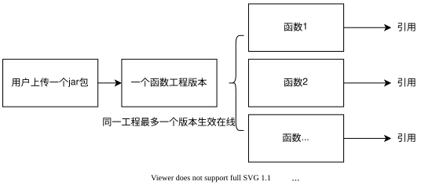
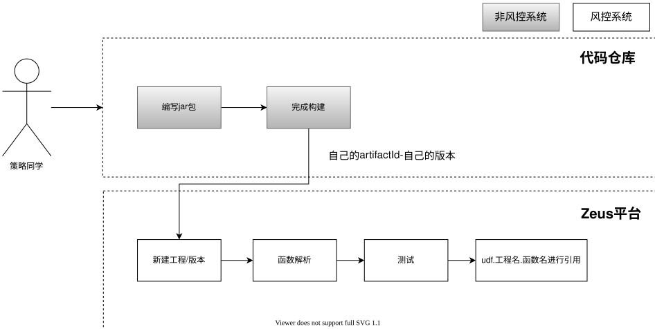
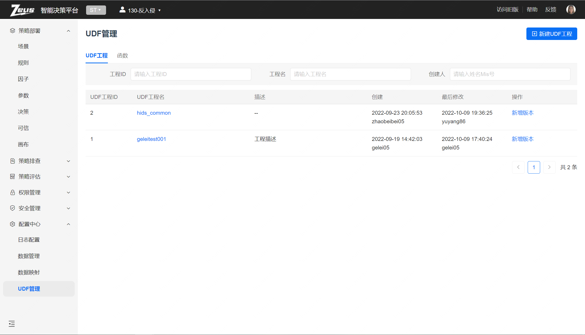
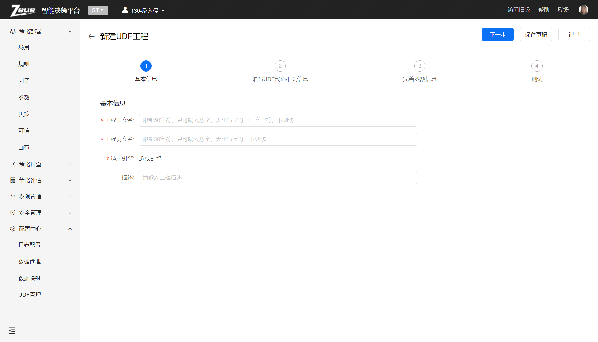
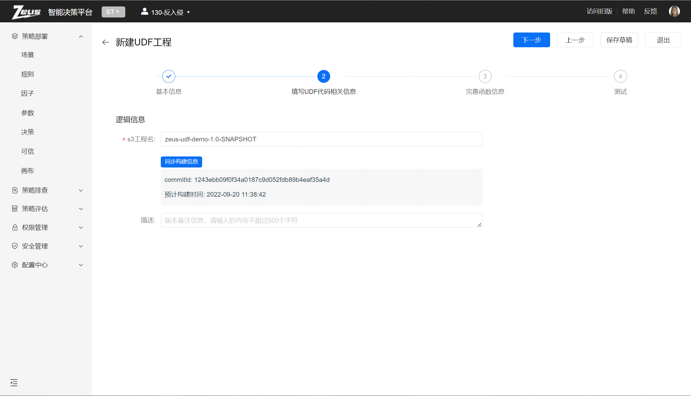
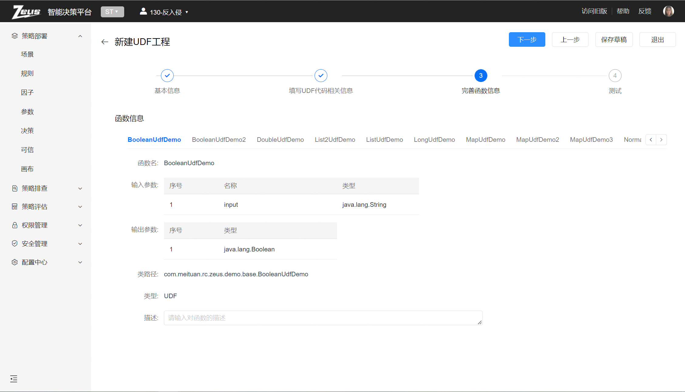
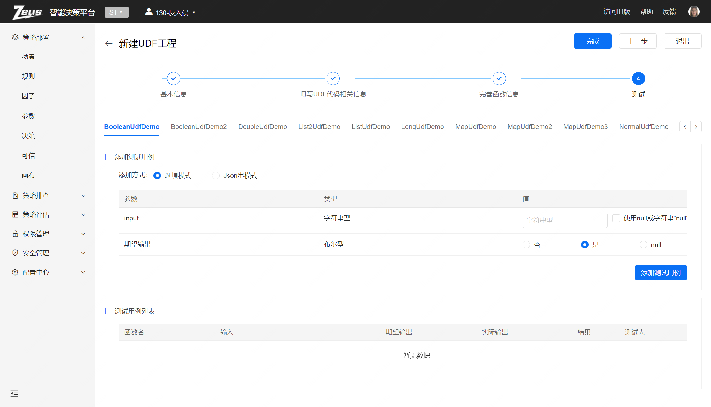
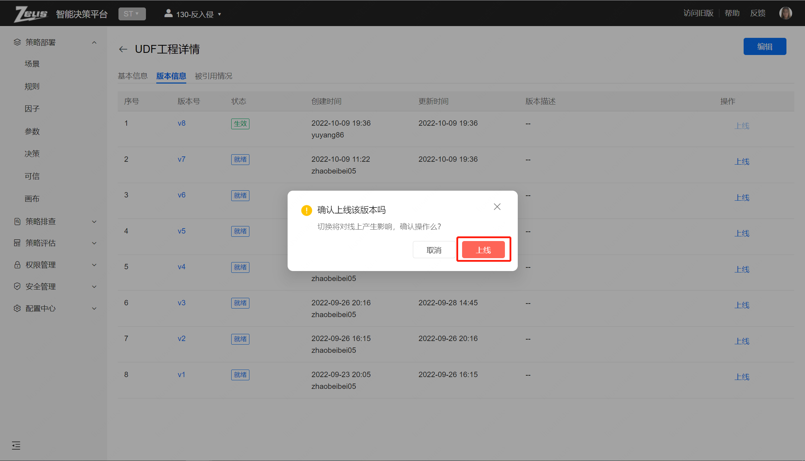
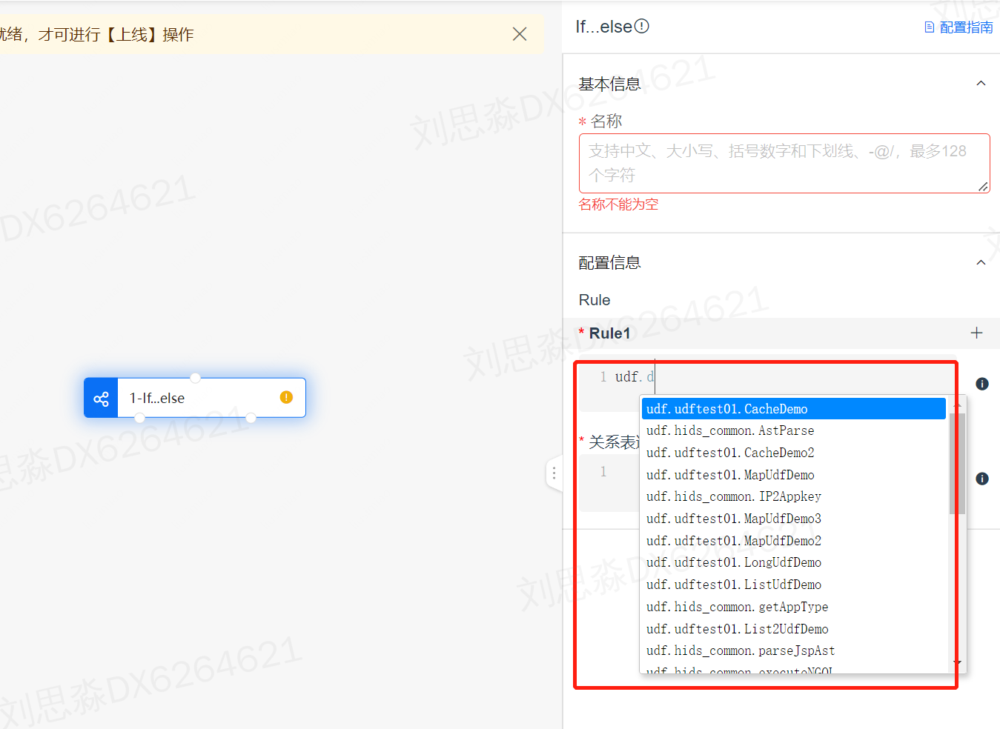
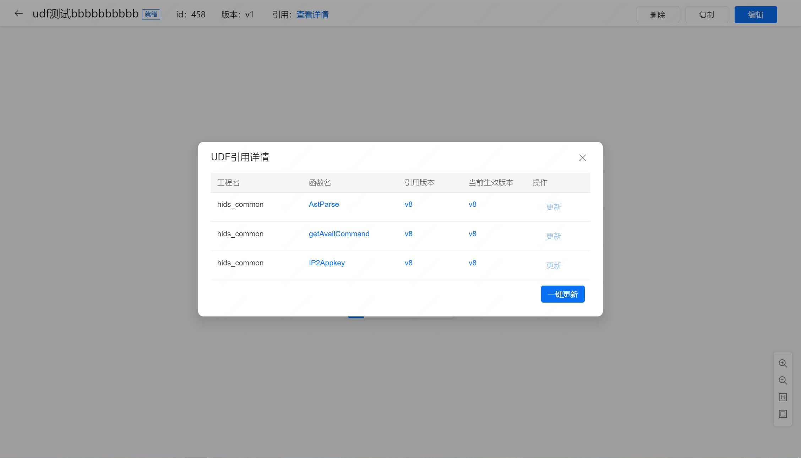

说明：画布 - UDF管理
一、背景
-
策略同学在建模过程中通常会有一些复用性较高、复杂度也高的函数，难以用aviator语法实现。目前只支持在画布/数据源管理中，通过代码组件的功能引入代码实现该类函数。比较粗糙且仅有一次性代码部署执行能力无法做到可复用；或者通过人工找RD的方式来添加扩展函数，时间流程长，建模效率低
二、名称解释
UDF：用户自定义标量值函数（User Defined Scalar Function），其输入与输出是一对一的关系，即读入一行数据，写一条输出值 。
三、使用概览
-
工程与函数的对应关系

-
总体流程图

四、操作说明
目前仅130空间下含该功能，如其他业务空间有该需求可提tt至rd同学帮忙配置该功能
4.1 jar包准备及编译
- UDF本地jar包格式及jar包构建方式：学城文档 1374510499（无权限读取标题）
4.2 新建版本或工程
- 列表页可查询生效版本/最新一版UDF工程、生效版本函数。点击右上角可开始新建UDF流程，点击某一工程右侧新增版本，即进入新增UDF版本流程

2. 填写中英文名，UDF展示多以英文名为主

3. 填写S3名（名称为pom中配置的: 自己的artifactId-自己的版本）完成构建

4. 函数解析。确认函数个数及内容是否与jar包中相符，若不一致，可发起tt联系rd解决

5. 测试。可对工程中函数进行逻辑测试，保存该工程须至少有一个函数测试用例通过

4.3 版本升级
- 版本升级时，新版本的代码须包含或兼容上一个在线版本的被依赖函数，否则将升级失败

4.4 udf引用
- 引用范围：画布aviator表达式（后续对于规则因子、画布代码组件等会陆续支持）
-
引用方式：udf.工程名.函数名

- 更新方式：点击画布详情页左上角查看详情，对于udf当前生效版本和画布引用版本不一致的支持更新。更新后对于线上画布会自动重启，使用更新后的版本；对于仿真测试需用户手动修改表达式，重新触发表达式编译才能正常仿真。
-
用法建议：不建议访问外部数据源，可直接使用三方数据源组件

五、常见Q&A
可能遇到的问题及解决方案正在持续补充中...
5.1 udf执行时可能遇到的问题
对于依赖了公司平台包的udf函数，建议在udf管理页面进行测试（由于部分公司平台包，启动较为复杂，可能会导致初始化失败)
已知问题: 由于com.sankuai.sec.basic_info的依赖了启动比较复杂的redis和lion等公司平台包，
对于如下包名开头的包，将采用平台而非业务自己在udf里引用的三方包：com.dianping;com.sankuai.sec.basic_info;com.alibaba.fastjson;com.google.gson;org.apache.http;com.sankuai.inf.patriot"
5.2 是否支持udf中调用外部数据源
平台未做限制，但建议走三方数据源调用，而非在udf中访问外部数据源(因为udf中对于外部数据源不具备限流能力，带来的风险需要业务自行cover)
5.3 udf是否支持缓存，哪些场景适用缓存
udf支持缓存；使用方式，参考: 学城文档 1374510499（无权限读取标题）
使用缓存场景建议:
1.udf执行耗时长或cpu消耗量大
2.udf缓存命中率高
5.4 udf调用监控
udf调用量及耗时监控:
使用缓存能力的udf调用量及耗时监控:
5.5 udf支持范围
当前仅支持画布aviator表达式中进行引用，后续会逐渐在画布代码组件、规则因子中支持udf使用。如有相关诉求可反馈至@刘思淼，帮助我们之后更好的迭代升级~~
5.6 有函数没有被解析出来
先排查是否jar包中是否继承ZeusUdfScalarFunction类，只有继承了才能被解析出来。若已继承仍未解析出来，可提tt至rd